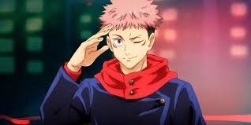
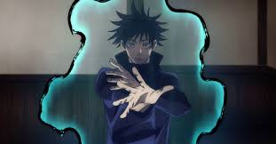
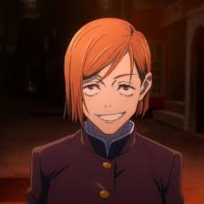
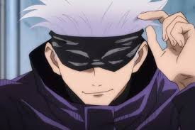
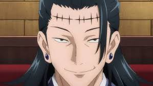
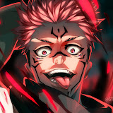

Seja muito bem vindo ao meu site de jujutsu kaisen, pra te explicar melhor sobre o que é esse site, vou fazer uma pequena explicação.
Nesse site, eu vou te dar uma base do Anime Jujutsu Kaisen para que caso você tenha vontade de assistir,
já fique por dentro do que se trata a história, e conheça os personagens.
ALERTA DE SPOILER
Bom, vamos começar então pela história.
A história de jujutsu, diferente do que muitos pensam passa na verdade no mundo moderno, porém com
alguns diferenciais que no nosso mundo não é nada confirmado.
nesse mundo existem espíritos ruins que são chamados de MALDIÇÕES, as
maldições existem por causa da energia ruim na terra como Tristeza, Receio, Ódio, Vingança e tudo que
for sentimento malígno elas nascem disso.
Maldições são invisíveis a olhos humanos normais, porém é possivel enxergar uma maldição quando se está
muito perto da morte, ou possuir ENERGIA AMALDIÇOADA. Para combater esses
espíritos, existem os FEITICEIROS JUJUTSU, que são humanos portadores
de energia amaldiçoada com poderes capazes de enfrentar as maldições, são como os "caça fantasmas"
digamos assim.
Acontece que um humano, chamado de Yuji Itadori por alguns eventos que acontecem na história, se viu
obrigado a engolir o dedo de uma maldição muito antiga e poderosa, chamada de SUKUNA, esse dedo é amaldiçoado com uma parte de seu poder, e Yuji poderia
Encarnar a maldição, ou então morrer, era uma chande de 1 em 1.000.000, porém como já consegue imaginar,
a maldição encarna querendo destruir o mundo e tudo que há nele.
assim começa a aventura de nosso protagonista ao redor do mundo para encontrar todos os dedos de Sukuna,
e depois... morrer... levando assim a maldição com ele.
Abaixo estão os principais personagens da Obra.
- Yuji Itadori 
- Megumi Fushiguro 
- Nobara Kugisaki 
- Satoro Gojo. 
- Kenjaku 
- Sukuna 